Help
Please purse your lips to have your picture taken
The white lines should connect your top and bottom lip
Head should be centered on the camera feed
Taking off your glasses may help with the alignment of the white lines
Click "Take Picture" if the program is not taking your picture successfully
Click "Continue" when your picture has been successfully taken
Current face
Face with Improved Fortune